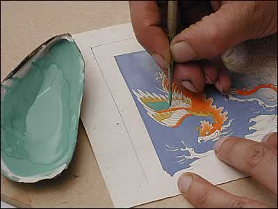

Colouring
After the initial drawing is completed, the artist then fills in the design with blocks of colour. The more precious a pigment was, such as lapis lazuli or malachite, the more unlikely it was to be mixed with other colours or agents. However, with their growing interest in European painting, the Mughals experimented with colour mixing in an attempt to recreate some of their atmospheric effects.
| ||
| ...previous | next... | |